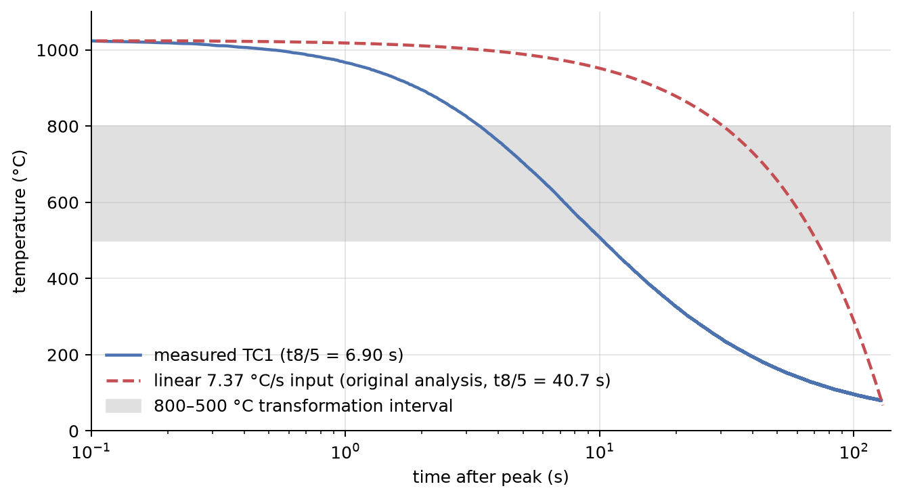
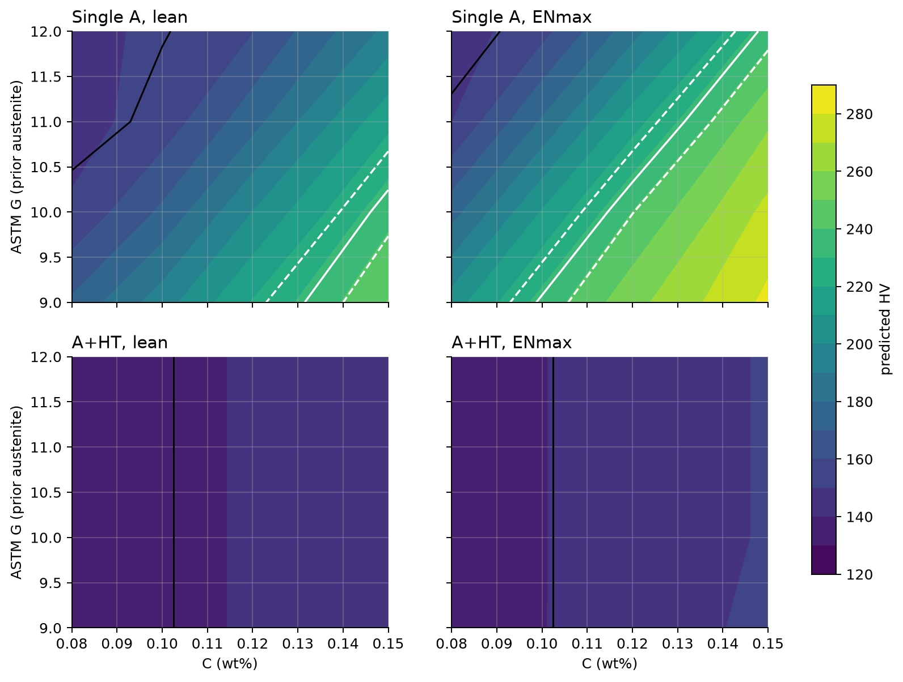
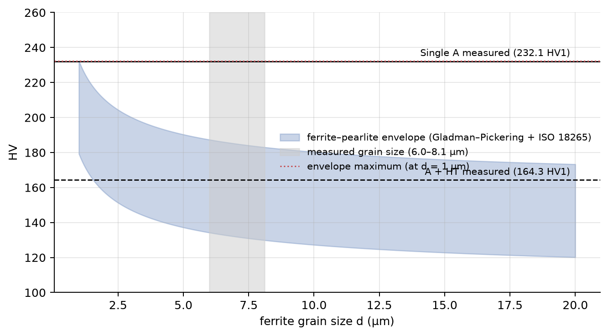

Case study · Gleeble 3500 + Quantitative metallography · TUM
Thermal cycles, microstructure & the limits of Kirkaldy–Li HAZ models
Gleeble 3500 simulation of S355J2C+C heat-affected zones, quantitative metallography validated against synthetic Voronoi oracles, an audit of semi-empirical austenite-decomposition modelling, and a model-free microstructural hardness bound.
Why I went back to this
In a TUM lab course (“Thermomechanical material behaviour”) our group ran three Gleeble 3500 thermal cycles on cold-drawn S355J2C+C structural steel, measured Vickers hardness and took optical micrographs. The original write-up then ran an open-source implementation of the Li (1998) austenite-decomposition model with Maynier hardness relations and reported that the model reproduced the welding-cycle hardness within about 10 %.
That agreement was the weakest part of the work. The model needs carbon content and prior-austenite grain size, and we had measured neither. A model with two free inputs that matches one number has not been tested. So I re-did the analysis from the raw instrument files, with one question in mind: what does it take to validate a Kirkaldy-type HAZ model, and how uncertain is it when the inputs are not known?
Why these three specimens
Each cycle tests something different, and together they bracket the model's range:
- Single Cycle A (peak 1025.5 °C, t8/5 = 6.90 s) is a fast welding-type cycle that peaks just above Ae3, giving a fine-grained HAZ. Cooling is fast enough that the transformation kinetics decide the outcome, so this is the hardest case for the model and the one the 10 % claim was about.
- Single A + heat treatment (900 °C for 600 s, then slow cooling) is the control. It ends close to equilibrium ferrite–pearlite, where the lever rule tells you what to expect. If the model fails here, the problem is the inputs, not the kinetics. It also gives the carbon content without any transformation model.
- Multi Cycle (eight peaks from 1358 to 596 °C) imitates multi-pass welding. It checks whether the measurements resolve overlapping HAZ sub-zones. They do: indent position matters only in this specimen (25 HV between positions, Holm-adjusted p = 0.0017).
Step 1: check the inputs before the model
Before trusting or blaming the model, I checked what had been fed into it. The original run used a constant cooling rate of 7.37 °C/s, which is the average from the peak down to 80 °C. That gives t8/5 = 40.7 s. The thermocouple log shows 6.90 s, so in the window where austenite actually transforms, the real cooling was about six times faster. The composition was the DIN EN 10277 maximum (0.20 wt% C), not the heat's composition, which nobody had measured.
Slow cooling makes the model predict soft ferrite–pearlite. Maximum alloy content makes it predict hard constituents. The two errors pull in opposite directions, and they happened to land near the measurement. With the measured cooling curve and nothing else changed, the prediction moves from 208 HV to 286–323 HV, against 232 HV measured. The 10 % claim was a cancellation of errors, and I withdrew it.

Step 2: audit the code against the paper
I compared the open-source implementation line by line with Li et al. (1998). It is faithful except in two places, and I fixed both. First, ferrite could grow without limit, so a slowly cooled specimen turned 100 % into ferrite and never formed pearlite, which the micrograph of the control specimen clearly contradicts. Capping ferrite at its equilibrium fraction restores an 84/16 ferrite/pearlite split. Second, the cooling rate at 700 °C was taken by inverse interpolation on noisy thermocouple data. A least-squares slope over 650–750 °C is stable. Neither fix changes the conclusion for Single Cycle A, which shows the problem there is not a code bug.
Step 3: ask how much the model can actually say
Since carbon and grain size are unknown, picking one value and reporting a prediction hides the real uncertainty. Instead I propagated the admissible ranges (C 0.08–0.15, Mn 1.00–1.60, Si 0.10–0.55, Cu 0–0.55 wt%, ASTM G 9–12) through the corrected model with a 250-sample Monte Carlo run.
For Single Cycle A the model gives 182 ± 39 HV (5th–95th percentile 134–246 HV). The measured 232 HV sits inside that spread, so within the admissible inputs the model can be made to agree with almost anything plausible. Agreement is uninformative unless the input range is stated with it. Mn and C dominate the output; grain size comes third. The model's own time discretisation adds another 9.2 HV peak to peak, which is about the same as the indent scatter.
Step 4: add a second observable
Hardness is a single number that depends on the phase mixture only through a rule of mixtures, so different microstructures can give the same value. I measured the optically dark constituent fraction (≈ 0.10) with an automated pipeline, and then asked whether any admissible input reproduces both the hardness and that fraction, assuming the dark constituent is the model's non-ferrite fraction.
None of the 32 input combinations comes within 1σ of both (minimum Mahalanobis distance 5.3). Where the model matches the dark fraction, it is about 80 HV too soft. Hardness alone hid this. With two observables, the model and the “light phase is ferrite” reading cannot both be right.

Before using the image-analysis routines on real micrographs, I tested them on synthetic Poisson–Voronoi microstructures whose answers are known exactly. The first version of the method failed that test, and a later check found a counting error next to pearlite that had inflated grain sizes about threefold. After both fixes, intercepts are recovered within 10 % and agree between 500× and 1000× within 7 %. Measured light-phase intercepts are 7.8 µm (base metal), 7.0 µm (Single Cycle A) and 6.3 µm (A + HT).
Step 5: a bound that shares no equations with the model
To decide what the light-etching phase in Single Cycle A is, I needed an argument that does not depend on Li kinetics or Maynier relations. The Gladman–Pickering relation with a Hall–Petch term gives the strength of a ferrite–pearlite aggregate from composition, pearlite fraction and grain size. I converted it to hardness (ISO 18265) and propagated its scatter.
Over every admissible composition and up to 22 % pearlite, no near-equilibrium ferrite–pearlite structure in this steel exceeds ≈ 200 HV for grains of 3 µm or larger. Reaching 232 HV needs grains of about 1 µm with everything else at its upper limit; we measured 7 µm. The light phase is therefore not polygonal ferrite. The most consistent explanation is a largely bainitic product, which is also consistent with published data: 230–265 HV1 in a simulated HAZ of a higher-strength steel (S700MC) at t8/5 < 10 s.

The same idea bounds the unmeasured carbon. Two unrelated routes on the control specimen (lever rule from the optical fraction, and inverting its hardness through Gladman–Pickering) give overlapping 90 % intervals on 0.067–0.123 wt% C, well below the 0.20 wt% that the original run assumed. A 1D carbon-diffusion calculation along the measured heating ramp shows that the austenite is homogeneous at the observed pearlite spacing, which rules that out as an alternative explanation.
What it proved, and what it did not
- Proved: the previous agreement was compensating error; the Li/Maynier model cannot be validated against bulk hardness when carbon and grain size are unknown; the fast-cooled zone is not near-equilibrium ferrite–pearlite.
- Not proved: which bainite. Granular bainite and polygonal ferrite have almost the same nano-hardness (2.7 vs 2.6 GPa), so the micro-hardness test I originally proposed cannot settle it. The decisive test is an EBSD kernel-average-misorientation map. A spark-OES analysis would pin down carbon. Both are listed in the report, ordered by how much they would change.
- Also reported: an optical shape-anisotropy test I hoped would replace a tint etch. It failed its own synthetic control, so I rejected it and reported it as a negative result.
Takeaways
Semi-empirical HAZ models are useful for trends, for example how hardness moves with t8/5. They are not reliable for absolute hardness when carbon is unknown to better than about ±0.03 wt%. This is not specific to the Li model: four published CCT descriptions of S355J2+N disagree on phase fractions by more than the model error measured here. A measured CCT diagram for the actual heat would reduce the uncertainty more than a better model would. The analysis is written up as a reproducible Quarto report. Two verifier scripts recompute every number in the text from the raw files, and 29 tests cover the code.
Lessons learned
- A match to one number is not validation. With free inputs, agreement can come from errors that cancel. Report the input range together with the prediction, and test against at least two independent observables.
- Audit the inputs before the physics. The biggest error here was a cooling curve typed in as a straight line, not anything in the model.
- Test the measuring tool on a known answer first. The first metallography method failed on synthetic microstructures, and a threefold grain-size error turned up soon after. Neither would have shown on real images alone.
- Look for an argument that shares no equations with the model. The model-free Gladman–Pickering bound did more to identify the phase than any amount of model tuning.
- Read the literature before proposing experiments. My proposed follow-up test was already published and turned out not to resolve the case that matters, which changed what I recommend measuring.
- Report the negative results. The failed optical discriminator saves the next person from trying it.